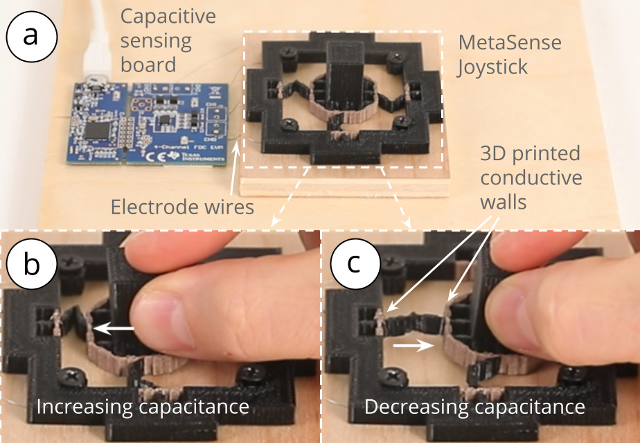
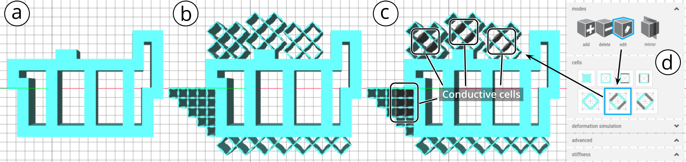

Since 2017 © MIT CSAIL (HCI Engineering group) [redesign by
moji
].
All Rights Reserved.


Figure 1: MetaSense integrates sensing into 3D printable metamaterial structures by fabricating specific cell walls from conductive filament, thereby creating electrodes that can be used for capacitive sensing: (a) an input device that senses compression, (b) an accelerometer, (c) a discrete state switch, (d) a controller that senses shear, and (e) a joystick that senses magnitude and direction of applied force.
In this paper, we present a method to integrate sensing capabilities into 3D printable metamaterial structures comprised of cells, which enables the creation of monolithic input devices for HCI. We accomplish this by converting select opposing cell walls within the metamaterial device into electrodes, thereby creating capacitive sensors. When a user interacts with the object and applies a force, the distance and overlapping area between opposing cell walls change, resulting in a measurable capacitance variation.
To help designers create interactive metamaterial devices, we contribute a design and fabrication pipeline based on multi-material 3D printing. Our 3D editor automatically places conductive cells in locations that are most affected by deformation during interaction and thus are most suitable as sensors. On export, our editor creates two files, one for conductive and one for non-conductive cell walls, which designers can fabricate on a multi-material 3D printer. Our applications show that designers can create metamaterial devices that sense various interactions, including sensing acceleration, binary state, shear, and magnitude and direction of applied force.
While early work in personal fabrication focused on designing the outside of objects, recently researchers proposed to also consider the internal structure of objects as an important design element. By dividing the inside of objects into grids of repetitive cells and modifying the parameters of the cells, researchers were able to achieve various mechanical properties. These so called mechanical metamaterials can make objects harder or softer and more or less flexible through their specific internal geometries without changing the outer geometry or printing material. To push this idea further, Ion et. al. proposed metamaterial mechanisms, which are cell structures that transmit input forces in one location to output forces in another when cells are being deformed.
To augment such mechanical metamaterial structures with sensing capabilities, researchers investigated how to integrate different types of sensing elements. For instance, Helou et al. and Nick et al. showed how to embed discrete digital switches and logic gates into mechanical metamaterials. However, while these works are able to sense discrete states when the metamaterial structure is being deformed, they are not able to continuously sense deformation. In addition, the sensing elements are created by either manually filling liquid metal channels inside the metamaterial or by applying conductive ink to the passive metamaterial structure. Furthermore, placing the sensing elements inside the metamaterial structure requires expertise and no support tool was provided by these prior works to help users with quickly prototyping metamaterial structures with various sensing capabilities.
In this paper, we explore how to go beyond sensing discrete states by developing an approach to add continuous deformation sensing to mechanical metamaterials. Inspired by work on conductive shear cells as sensors, we propose to integrate these cells into mechanical metamaterial devices. Each conductive shear cell contains two opposing conductive walls. When a user is manipulating the metamaterial device, the distance and overlap area between the two opposing conductive walls of a cell change accordingly, resulting in a capacitance variance that can be measured. This is depicted in Figure 1 and Figure 2.

Figure 2: The conductive cell walls of MetaSense objects act as capacitance sensors to detect user interaction. Here, a Metasense joystick is shown in (a) original state and (b,c) deformed states during user interaction with capacitance changes of conductive shear cells detected accordingly.
To help designers create mechanical metamaterial devices with continuous deformation sensing, we built a 3D editor that computes the optimal locations for placing conductive shear cells within the structure. We accomplish this by running a mechanical simulation which identifies the cell walls with the greatest deformation and thus the greatest capacitance variation, which are ideal candidate locations for sensing cells. On export, the editor creates two .stl files for multi-material 3D printing with conductive and non-conductive filament, eliminating the need for manual assembly. After 3D printing, users only have to connect the conductive cell walls to our sensing hardware and the interactive object is ready be to be used. To evaluate the effectiveness of our approach, we tested conductive shear cells of varying sizes and found that even small cell sizes (5mm x 5mm) support robust capacitive sensing.
In summary, our primary contributions are: (1) the development of metamaterial devices with continuous deformation sensing enabled by measuring capacitance variation caused by the deformation of conductive shear cells, (2) a design and fabrication pipeline based on multi-material 3D printing that supports designers in placing conductive shear cells in optimal sensing locations based on a simulation of mechanical deformation, (3) a study to validate the feasibility of our sensing approach with different cell parameters (e.g., thickness, width); and (4) a series of applications to showcase the sensing capabilities and interactions enabled by our technique.
MetaSense objects are metamaterial devices with integrated deformation sensing. In this section, we discuss the sensing principle and resonance-based capacitive sensing technique used to create our interactive metamaterial devices.
Sensing Principle: Capacitance Change Between Conductive Cell WallsAs mentioned in the introduction, our conductive shear cells contain two conductive opposing walls. Each conductive wall serves as an electrode. When a user interacts with the object and applies a force, the geometry and consequently the conductive shear cells deform. The distance and overlapping area between two opposing conductive walls change accordingly, resulting in a capacitance change that can be measured via capacitive sensing.
Resonance-Based Capacitive SensingTo sense this capacitance change, we use a resonance-based approach rather than a traditional time-based capacitance method. There are two main reasons for this.
High Measurement Resolution: Unlike conventional capacitive sensing for touch input, our application requires measuring small capacitance changes. This is caused by three factors. First, the conductive cell walls (i.e., the electrodes) are smaller than the electrodes traditionally used for touch sensing. Second, the electrodes are 3D~printed with conductive filament, which has a high resistance, and thus the printed electrodes have a lower conductivity compared to metal electrodes of the same size. Third, the contact resistance between the wires and the printed electrodes results in a higher resistance reading than is theoretically possible. These factors cause capacitance changes to be small when the cells are deformed. A resonance-based measurement approach has a higher precision than time-based capacitance and allows us to compensate for the diminished conductivity. The resonance-based system allows us to detect capacitances across a 1pF to 250nF range. In our experiments, capacitances ranged from 1.0029pF to 1.0857pF.
Better Signal-to-Noise Ratio: A resonance-based approach is less susceptible to electromagnetic interference (EMI) and thus has a better signal-noise-ratio (SNR). This further combats the issue of diminished electrode quality due to the aforementioned reasons.
Figure 3: Measuring capacitance changes: (a) original state, (b) deformed state. Perpendicular distance d and overlapping area A in (a) changes after deformation to d' and A' respectively in (b).
To measure the resonant frequency f, we built a circuit consisting of a resonant-based capacitive sensing chip (FDC2214, Texas Instruments) and also used the evaluation board (FDC2214EVM) to collect the resonant frequency measurements (Figure 2a).
Sensing Resolution: We chose the capacitive sensing chip (FDC2214) for its high resolution (up to 28 bits) and intrinsic noise robustness to compensate for the low conductivity of the printed electrodes. After calibration, we needed up to 21bits out of the available 28bits, which exceeds the 10 bits offered by the common alternatives, i.e. the MPR121 chip or the Arduino CapacitiveSensor library. For applications that do not require a high sensing resolution, these advantages may not be imperative, and the alternative chips can be used as well.
Sampling Rate: The evaluation board can achieve measurements with a sampling rate of up to 13,300Hz. For our applications, a sampling rate of 100Hz (i.e., 100 samples per second) was sufficient, but higher sampling rates may be useful for higher frequency applications.
Number of Cell Walls Supported: The evaluation board can take resonant frequency measurements on up to four input channels, which allows us to measure four conductive cells at a time. By using a 4:1 multiplexer (FSUSB74, ON Semiconductor), we were able to increase the number of conductive cells that can be measured with the board to 16. Adding additional multiplexers can further increase the number of cells that can be measured simultaneously.
Signal ProcessingAfter receiving the resonant frequency measurements, we used exponential smoothing (a special case of the IIR low-pass filter) to remove noise from the input data. We then converted the resonant frequencies to capacitances using formula~(\ref{capacitance-freq-equation}). For calibration, we compute the working range by memorizing the minimum and maximum measured values at each sample. For the user interactions, we only send a measurement percentage according to the working range.
Extension of Sensing Principle to Advanced Cell TypesThe sensing principle described above also applies to cell types that are different from the standard cell shown in Figure 3. The non-conductive walls need not be parallel, and can take on different layouts. Figure 4 shows example configurations of advanced conductive shear cells that use the same sensing principle and are supported by the same measurement hardware as the conductive shear cell described in the previous sections. Depending on the situation, we might need special mechanical properties such as strength or flexibility, and these advanced cells allow better capacitance ranges, hence better signal-to-noise ratio.
Figure 4: Examples of different types of conductive shear cells, all supported by the same sensing principle and sensing hardware: (a) is standard, (b) is used for our characterization, and (c,d) are used in the joystick.
To accomplish the best print quality for MetaSense objects, we experimented with different 3D printers, filaments, and print settings, and tested different methods to connect the printed cells to the sensing board.
3D Printer & Filament: We tested three different 3D printers (Ultimaker3, PRUSA i3 MK3 with multi-material add-on, and FlashForge New Creator Pro 2), two conductive filaments (ProtoPasta Composite Conductive PLA, Multi3D Electrifi) and two non-conductive filaments (NinjaFlex TPU, SainSmart Flexible TPU). Each 3D printer and filament combination required adjustments of the default settings to successfully print robust yet flexible multi-material objects containing conductive shear cells. The 3D printer and filament combination that produced the best result was the FlashForge New Creator Pro 2 (0.4mm nozzle) with the conductive filament Multi3D Electrifi (1.75mm in copper) and the non-conductive flexible filament SainSmart (1.75mm in black or white). We used this 3D printer and filament combination to print the example objects in this paper.
Printing Settings: We determined that the optimal extrusion temperature for the conductive filament is 130°C and for the non-conductive filament 230°C. A print speed of 10mm/s produced sufficiently conductive cells, but slower print speeds led to higher conductivity at the expense of additional print time. We kept the build plate temperature relatively cool at 40°C since the lower melting point of the conductive material sometimes caused prints to detach during the build process. Lining the build plate with an even layer of masking tape followed by a coat of Elmer’s All Purpose School Glue Stick helped to adhere the object to the build plate while it was being printed. We used a prime tower to prevent print residuals that occur when the 3D printer switches between the conductive and non-conductive filaments.
Connection to Sensing Board: After 3D printing, we connected the conductive cell walls to the sensing board using a bare nickel chromium wire (34-gauge). We first warmed the end of the wire, allowing it to more easily pierce through the conductive cell wall (as it slightly melts the filament), and then looped it around the cell wall once. We then soldered the other side of the wire to the sensing board. A wired up example is shown in Figure 2.
We ran a preliminary experiment to (1)verify that deforming a conductive shear cell indeed leads to changes in capacitance, and (2)determine the smallest cell size at which capacitance changes can still be detected reliably (smaller cell sizes are more desirable since they allow for more degrees of freedom in configuring metamaterial objects). For the experiment, we fabricated basic cell structures of varying width w and length l, and also varied wall thickness since it impacts how easily the printed objects can be deformed. We then measured their resonant frequencies under deformation and determined the resulting capacitance.
Cell ParametersCell Size (Length l and Width w): We fabricated 5 cell sizes with widths and lengths at 5mm increments, i.e. 25mm, 20mm, 15mm, 10mm and 5mm (Figure 5). Cells 4mm and smaller had a high print fail rate.
Wall Thickness: We fabricated each of the cell sizes with two different wall thickness: 0.5mm and 0.8mm. We chose 0.5mm as it is the thinnest wall thickness that is reliably printed by the common 3D printing nozzle (0.4mm). We added 0.8mm wall thickness as this creates more robust metamaterial structures. Wall thicknesses do not contribute to the capacitance, i.e., capacitive sensing is dominated by the surface area A of the electrodes and distance d between them. However, different wall thicknesses do have a structural impact and change the cell's mechanical compression ability. Thinner cells can be compressed more, which results in a larger capacitance change between the original and the deformed state. This is particularly important for small cells that have a small capacitance range due to their small electrodes. Larger cells that have a larger capacitance range can benefit from thicker walls to ensure robustness against repeated compression.
Figure 5: Cells sizes used for the evaluation: 25mm, 20mm, 15mm, 10mm, 5mm.
Experiment Setup: For each cell size and corresponding wall thickness, we printed 5 copies for a total of 50 printed conductive shear cells (5 cell sizes * 2 thicknesses * 5 copies) and connected one copy at a time with a wire to the capacitive sensing circuit. The wire from the cell to the capacitive sensing circuit was 3cm long and isolated from human or metal disturbance by 0.5m. To be able to deform the cell without touching it, we connected a plastic strip to a digital micrometer. Adjusting the screw of the digital micrometer allowed us to precisely determine the distance between the conductive cell walls, i.e. turning the screw moved the plastic strip down, which increased the pressure on the tested cell and brought the cell walls to the specified distance.
Experiment Procedure: We measured the resonant frequencies at five different distances between the conductive cell walls. For each cell size, we divided the total distance between the two conductive cell walls by 5 to determine which distances to measure (5mm cell: measured every 1mm, 25mm cell: measured every 5mm). We measured the resonant frequency at each distance and then calculated the capacitance. Figure 6 shows an example of the capacitance when the cell is in a deformed vs. undeformed state.
Figure 6: Visualization of capacitance in (a) compressed and (b) released states for a 5mm * 5mm * 0.5mm cell.
Effect of Distance (d) on Capacitance (C): As expected, we found that the computed capacitance value C has an inverse relationship with the distance d between the opposing cell walls (Figure 7)
Effect of Cell Size (l, w) on Capacitance Range: Since capacitance is proportional to wall area, larger cells have a larger capacitance variation. This can also be seen in Figure 7 where the capacitance of the largest cell (25mm) ranges from 1.022pF to 1.085pF (total range: 62.6fF) and the smallest cell (5mm) ranges from 1.005pF to 1.01pF (total range: 4.8fF). Thus, larger cell walls perform better as sensors. While our smallest 3D printable cell size still had detectable capacitance changes, the capacitance values are reaching the limit of the capacitive sensing circuit capabilities (1pF). Thus, if 3D printing resolution increases in the future and printing smaller cell sizes becomes possible, it also requires a sensing board that can sense smaller capacitance values.
Effect of Cell Size on Noise Level: We also found that larger cells are less susceptible to noise, i.e. the 25mm cell had a signal-to-noise ratio 24.4x better than that of the 5mm cell. We determine the noise level by comparing the 5 printed copies, i.e. computed the standard deviation of the overall capacitance range. For the large 25mm cells, the average capacitance range was 62.6fF with a standard deviation of 1.57E-03fF, leading to a noise level of 0.0045%, whereas for the small 5mm cells, the average capacitance range was 4.8fF with a standard deviation of 5.59E-03fF, leading to a noise level of 0.11%
Effect of Cell Thickness on Capacitance Variation (C): As discussed previously, capacitive sensing is dominated by the surface area of the electrodes A and the distance d between electrodes, not the cell wall thickness. Experimentally, we confirmed that the different wall widths (0.5mm vs 0.8mm) do not have an effect on the capacitance beyond mechanical compression. At the frequencies used by the sensing chip, the wall thickness does not impact the capacitance due to the skin effect. Our signal being around 37MHz, it largely occupies less than 1um of the surface of the copper wall (assuming a resistivity 0.012).
Figure 7: Measured capacitances for each cell size as the cell walls approach each other. As the distance d between cell walls decreases, capacitance C increases.
In summary, we conclude that our sensing hardware is indeed capable of detecting the deformation of our 3D printed conductive shear cells, and that while larger cells generally perform better, our smallest cell size of 5mm still led to detectable capacitance changes.
To facilitate the design of MetaSense objects with integrated conductive shear cells, we implemented a voxel-style 3D editor (based on the 3D editor of metamaterial mechanisms). The editor supports users in interactively placing and arranging conductive shear cells within an object’s internal geometry according to the desired sensing scenario. We illustrate our 3D editor's functionality using the example of a handheld deformable music controller that can detect user input from each of the user's fingers.
Adding Solid and Shear CellsAdding Solid Cells: To create our music controller, we start by designing the rigid interior of the controller using solid cells (Figure 8a). We first set the cell size to 5mm using the cell size input field. Next, we select the solid cell type from the cell panel, select the add brush, and then draw a block of solid cells for the music controller body onto the canvas.
Creating Shear Cells: Next, we create the deformable input areas by adding shear cells (Figure 8b). First, we create the deformable input area for the thumb. Since we want the thumb to shear and compress to mirror the thumbs movements, we select the shear cell type from the cell panel and then draw the corresponding cells. We also want to add a metamaterial padding where the palm is touching the controller to support a firm grip. Since the palm padding should only compress and not shear, we select the rotated shear cell type, which resembles a diamond shape, to draw those cells.

Figure 8: Creating a model in the MetaSense 3D editor: (a,b): non-conductive, structural cells; (c,d) converting structural cells to conductive cells using the edit tool.
Adding Custom Cells: Next, we want to add the cells for the index, middle, and ring finger (Figure 8b). Since they all use the same cell design, we first create a custom cell template, which is comprised of the group of cells for one finger, and save it to the custom cell menu. After this, we select our custom cell and draw each finger's input area with a single click. Similar to the palm padding, the index, middle, and ring finger input areas are designed to compress but not shear.
Specifying Object InteractionNext, users can specify the intended object interaction by applying a force vector and simulating the deformation. This allows users to identify which parts of the cell structure deform most (i.e., have the largest capacitance variation), and are therefore the best candidate locations for placing conductive shear cells. In our music controller example, we want to specify how each finger deforms its finger padding to see where the conductive cells should be placed inside the padding.
Defining Anchor Points: We start by specifying where the finger padding of each finger is affixed on the music controller by selecting the `anchor' tool and then placing anchor points in the corresponding location. Figure 9a shows this at the example of the finger padding for the index finger, i.e. we select the bottom left and right corners of the deformable finger padding and define them as red anchor points.
Specifying the Force Vector: Next, we specify the force that is applied to each finger padding when the user deforms it with their finger (Figure 9). To do this, we use the force tool and attach a force vector to a vertex of the finger padding cell group. Next, we indicate the direction in which the force is applied. Dragging the force vector to increase its length increases the applied force. Figure 9b shows this at the example of applying a force simulating the index finger pressing down on the deformable input area.
Figure 9: Specifying object interaction on our music controller. The red dots specify the locations where the finger pad is affixed. (a) Before applying the force vector, (b) after applying the force vector.
Replaying the Interaction: Our editor also supports replay. By clicking start, users can record the force vector manipulations with the object, and end the recording by pressing stop. The provided slider can be used to replay the recorded interaction to visually confirm which cells deform most.
Placing Conductive Shear CellsTo incorporate sensing functionality into their Metasense object, users next convert cells in the best sensing locations into conductive shear cells. In our example, we want to convert one cell in each finger's deformable input area to a conductive cell to be able to sense input from the respective finger.
Manually Adding Conductive Shear Cells: Based on the force simulating, we can see that for the index, middle, and ring finger, the center cell in the cell group deforms most. We thus convert this cell in each finger's cell group into a conductive cell. To do this, we open the cells panel (Figure 8d), choose the conductive shear cell, select the edit tool, and then click on the center cell to convert it. For the thumb, we convert the second row of cells into conductive cells because our simulation shows they deform most.
Auto-placing Conductive Shear Cells: Alternatively, our editor can automatically place conductive shear cells in the locations that experience the highest deformation during interaction. Users start by specifying the number of cells they would like to convert into conductive shear cells, which depends on the sensing application. Next, they click the generate button, which automatically places the cells in the best location. In cases where the auto-placement results in conductive cells being placed too close to where a person might hold the object, users can manually change the cells using the edit brush.
Exporting the DesignAfter completing the design, users can click export to generate two .stl files, one for the conductive and one for the non-conductive filament. Users then import these files into the slicing software for the 3D~printer (e.g., FlashPrint, CURA), merge them, and fabricate them using dual-material printing. The printed music controller from our walkthrough is shown in Figure 10.
Figure 10: Printed music controller with deformable input areas for each finger.
To showcase MetaSense and its integrated sensing capabilities, we created four demo objects with different usage scenarios. Each application demonstrates interactions enabled by integrating sensing into the metamaterial structure, including sensing magnitude and direction of applied force, sensing of acceleration, and input capabilities for deformable user interfaces.
Deformable User InterfacesIn the field of HCI, deformable user interfaces have gained traction and resulted in a number of different interactive devices. MetaSense supports designers in quickly prototyping such deformable user interfaces by affording them with the ability to test and tweak the ergonomics and performance of their design with minimal manual labor. As an example, we developed a music controller, i.e. an input device for a digital synthesizer. As described in the walkthrough, each finger can provide input via a deformable finger padding that contains a conductive shear cell. The sensed finger input is then communicated to a Max MSP patch to influence the parameters for musical synthesis.
Figure 11: Ergonomic music controller: (a) undeformed state, (b) index finger applying pressure.
We designed a metamaterial joystick to demonstrate the effectiveness of MetaSense in creating monolithic tangible interfaces that can sense magnitude and direction of applied force. Figure 12 shows how we use the metamaterial joystick to play a game of PAC-MAN.
To create the joystick, we embedded four conductive cells, one in each direction of the joystick (up, down, left, right). For each conductive cell, one cell wall is contained in the moving joystick, the opposing cell wall is contained in the rigid frame. Thus, as the joystick moves inside the frame, the distance and area between the opposing cell walls changes and the direction and magnitude of applied force can be sensed. We created a custom linear regression model to convert the capacitance values from the four sensing cells into signals for the game.
The basic design of the joystick can serve as a module for designers to build on. For instance, designers can prototype various tangible affordances by creating a taller grip for the joystick or making various handle shapes, including unique controllers for people with limited grip strength in particular directions.
Figure 12: Monolithic metamaterial joystick that can sense magnitude and direction of applied force to control a PAC-MAN game.
Another benefit of MetaSense is its ability to integrate sensors into the structure of single part compliant mechanisms. In Figure 13, we demonstrate this capability at the example of an accelerometer. When acceleration is applied, the center hammer swings towards (or away from) the conductive cell on the bordering wall. The change in capacitance can then be used to calculate the acceleration. To build the conductive part of the hammer, we created a custom diagonal cell in the 3D editor using the advanced panel. This acts as an electrical ground shared between the two outer electrodes. As in the previous joystick example, we created a differential model to obtain measures robust to noise.
The accelerometer is one example of a capacitive sensor fabricated in a single part. Other types of capacitive sensors, such as humidity and temperature sensors, can also be fabricated in a similar manner.
Figure 13: Accelerometer: (a) visualization of the signal, (b) fabricated accelerometer, which uses (c)two electrodes that share one ground connection.
Mechanical engineering research has shown the benefits of compliant mechanisms that achieve force and motion transmission through elastic body deformation. The integration of conductive shear cells into such structures adds the benefit of various built-in sensing capabilities.
We demonstrate this with a bi-stable switch that detects state transitions. This switch design is inspired by mechanisms used for latching or deploying space systems such as deployable solar arrays. We embedded eight conductive shear cells into the sides of the switch. When the switch is actuated, pressure is exerted on the sides of the switch and the conductive shear cells get compressed (Figure 14). A simple threshold on the computed capacitance can be used to determine which state the switch is in. While we used eight conductive shear cells to improve robustness, a single shear cell on one side of the switch is sufficient to detect the interaction.
.Figure 14: A bi-stable switch based on a compliant mechanism with integrated conductive shear cells for sensing when the switch is flipped: (a) off state, (b) on state.
We discuss insights gained from our work, propose future research, and acknowledge the limitations of our approach.
Auto-placing Algorithm: The accuracy of our auto-placement algorithm depends on the accuracy of the Karamba physics simulation, which we did not evaluate. As structural simulation tools improve, our auto-placement algorithm will become more accurate in predicting the most optimal locations for conductive cells. In addition, our algorithm currently does not consider the capacitive effect from neighboring conductive cells or from a user’s hand during interaction when estimating optimal locations for conductive shear cells. As mentioned, after conductive shear cells have been automatically placed, users can still override individual conductive cell locations to meet specific requirements and considerations.
Routing Traces: Currently, we use bare nickel chromium wire to connect conductive cell walls to our sensing hardware to retrieve the resonant frequency values. Adding the wires can become a tedious post-processing step if there are many conductive cells within the interior structure. One potential solution is to automatically generate conductive routes from all conductive cells, which form wires when 3D printed with conductive filament. Another possible solution is to have a conductive routing layer with various routing traces propagate through the object geometry, similar to a Printed Circuit Board (PCB). However, these ideas require further investigation to determine feasible trace widths and lengths.
Proximity of User's Hand: As a hand approaches a capacitive cell, the capacitive noise increases. For the 5mm cell, the noise is 1% when the hand is 40mm away and 10% when the hand is within 10mm. The affected region is larger for bigger cells, i.e. for the 25mm cell, 1% noise occurs 75mm away, and 10% within 15 mm. The effect of touching can be mitigated through calibration, as we did in the music controller application. As discussed, our editor also allows users to manually move the conductive cells if the auto-placement results in cells too close to where the interactions occur. Our metamaterial devices performed reliably when fingers are as close as 5mm away from the conductive cells.
Material and Durability: We did not flex the materials beyond their limits. Our 3D printed objects did not show material fatigue even after repeated use for our tests. However, depending on the brand, the elasticity of the conductive filament and non-conductive filament may not be the same, and the intersections between these two materials may be more fragile and break apart after repeated use. We plan to add a feature into the Metasense editor to allow users to increase the density of material along intersections between different materials to avoid delamination.
In this paper, we presented an approach to integrate sensing capabilities into 3D printable metamaterial structures by converting selected metamaterial shear cells into conductive cells. By sensing the change in capacitance when opposing cell walls are deformed, we were able to determine user interaction with the metamaterial structure. We demonstrated the functionality of our interactive 3D editor that allows designers to prototype the internal structure of metamaterial objects with integrated sensing capabilities, and discussed our fabrication pipeline and sensing hardware. We also conducted an experiment to validate the feasibility of our approach, and presented a series of applications showcasing interactions enabled by our technique. Our work opens up new possibilities in creating interactive printed objects and compliant mechanisms by embedding sensing into the fabrication process. For future work, we plan to extend our fabrication pipeline to also leverage other fabrication tools and materials (e.g., laser-cut metamaterial structures made of thin sheet material, such as paper and plastics
The authors would like to thank Alexandra Ion and the team at Hasso Plattner Institute, who create the metamaterial 3D editor this work builds on. We would also like to thank Neil Gershenfeld and Joe Paradiso for their invaluable help. This material is based upon work supported by the National Science Foundation under Grant No. 1716413.